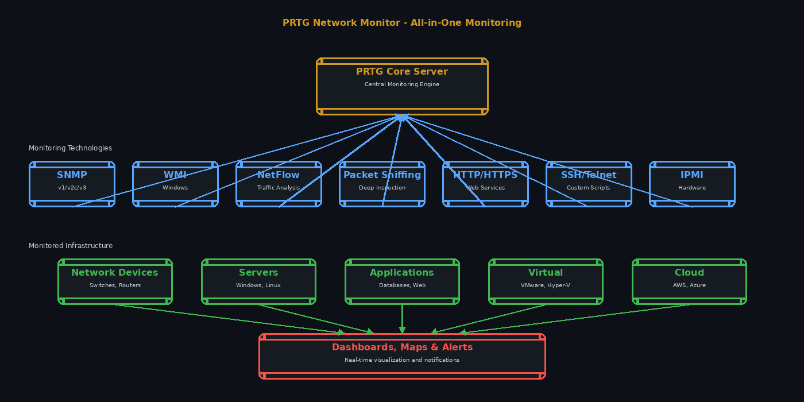

Overview
PRTG Network Monitor is Paessler's monitoring software for systems, devices, traffic and applications. It is built around sensors: each sensor monitors one metric or service, such as a ping, an SNMP counter, a WMI value, NetFlow traffic or an HTTP response, and licenses are sized by the number of sensors.
The PRTG core server runs on Windows (Paessler recommends Windows Server 2025, 2022, 2019 or 2016, or Windows 10/11). Remote probes extend monitoring to other sites, and multi-platform probes can run on Ubuntu, Debian, Red Hat Enterprise Linux and Raspberry Pi OS. Auto-discovery scans networks and adds devices with suggested sensors based on device templates.
PRTG is sold as an annual subscription from $200 per month (PRTG 500) to $1,642 per month (PRTG 10000). A freeware edition covers up to 100 sensors, and the 30-day trial has no sensor limit. Paessler also offers PRTG Enterprise Monitor for environments over 1,000 devices, PRTG Hosted Monitor, an MSP edition and an OT edition.
Key Features
Auto-Discovery
Scans the network and adds devices with suggested sensors from device templates.
Sensors
SNMP, WMI, NetFlow and packet sniffing, ping, HTTP and many more sensor types, plus custom sensors.
Maps and Dashboards
Real-time maps with live status and a map designer for dashboards.
Alerts
Custom thresholds and notifications by email, push and HTTP request.
Apps
Web interface, a desktop app and mobile apps for iOS and Android.
API and Probes
HTTP API, distributed monitoring with remote probes, and Linux multi-platform probes.
Pros & Cons
Advantages
- Freeware edition with up to 100 sensors
- 30-day trial with no sensor limit
- Published prices for every license size
- Auto-discovery speeds up initial setup
- Broad coverage: SNMP, WMI, flows, HTTP, custom sensors
Disadvantages
- Core server requires Windows (Server Core mode not supported)
- Subscriptions only; licenses are billed annually
- Sensor-based licensing grows with every metric monitored
- Freeware is limited to about 10 devices
Pricing
PRTG Network Monitor subscriptions, priced per month and paid annually (USD):
Freeware — $0
Up to 100 sensors (about 10 devices).
PRTG 500 — $200/month
Up to 500 sensors (about 50 devices).
PRTG 1000 — $358/month
Up to 1,000 sensors (about 100 devices).
PRTG 2500 — $742/month
Up to 2,500 sensors (about 250 devices).
PRTG 5000 — $1,300/month
Up to 5,000 sensors (about 500 devices).
PRTG 10000 — $1,642/month
Up to 10,000 sensors (about 1,000 devices). PRTG Enterprise Monitor is quoted separately for larger environments.
Best Use Cases
Ideal For:
- Small and mid-sized IT teams monitoring networks, servers and applications in one tool
- Windows-based IT shops
- Home labs and small offices that fit in 100 sensors
- MSPs (through the PRTG MSP edition)
- Industrial sites (through the PRTG OT edition)
May Not Be Ideal For:
- Teams that want to run the core server on Linux
- Large environments where per-sensor licensing becomes costly
- Cloud-native teams focused on application tracing and logs
Comparison
PRTG vs Alternatives
- vs Zabbix: open-source and Linux-based with no license fee; PRTG is easier to start with but billed by sensor count.
- vs SolarWinds Network Performance Monitor: another Windows-based commercial monitor aimed at larger enterprises.
- vs Splunk ITSI: service-level AIOps on top of Splunk data rather than device and sensor monitoring.
Screenshots & Interface
Explore PRTG's all-in-one monitoring platform:

Frequently Asked Questions
Is PRTG free?
Yes, up to 100 sensors with the freeware edition. Paid subscriptions start at $200 per month, paid annually.
What is a sensor?
One monitored metric or service on a device, such as ping, CPU load, bandwidth or an HTTP check. Licenses are sized by sensor count.
Does PRTG run on Linux?
The core server needs Windows. Multi-platform probes can run on Ubuntu, Debian, RHEL and Raspberry Pi OS.
Is there a trial?
Yes. The 30-day trial has no limit on sensors or devices.
Can I still buy a perpetual license?
Paessler's pricing page lists subscriptions for all license sizes.
Final Verdict
PRTG is a practical all-in-one monitor for Windows-based IT teams: auto-discovery gets you running quickly, the freeware edition covers small networks, and prices are published. Sensor-based subscription pricing adds up as you monitor more, and the core server only runs on Windows.